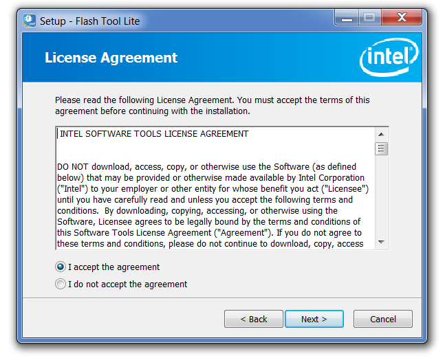
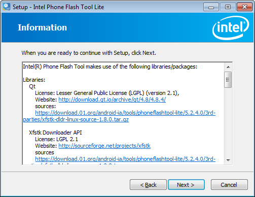
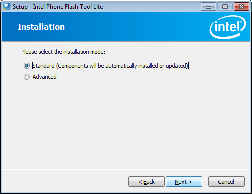
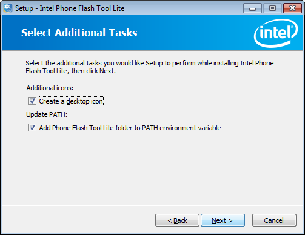

Set up Flash Tool Lite for Windows*
This document explains the installation procedure Flash Tool Lite for Windows*. The tool is used to flash the firmware on Intel® Edison boards, but will expand to other IoT products in the future.
Installation
-
Get the latest Flash Tool Lite.
- On the USB key: downloads → Windows
- Copy PhoneFlashToolLite_[version]_win32.exe to your computer.
-
Run the installer and click Next.

-
Accept the License agreement, click Next.

-
Click next after screen documenting libraries and packages.

-
Select Standard installation.

-
Retain the selections, click Next.

-
Click Install to complete.

*A driver install may be specified after completion of the main wizard, answer yes and complete that install.